| ID | 問題 | 答え | 解説 |
|---|---|---|---|
| Lv04_Ca013_0001 | 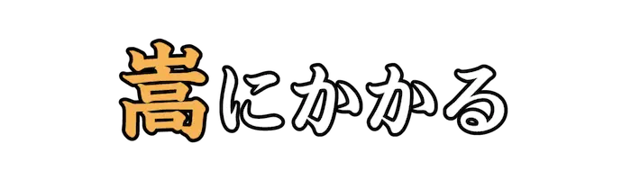 |
かさ | 自身の地位や立場が良いことを利用して、相手を威圧する。 |
| Lv04_Ca013_0002 | 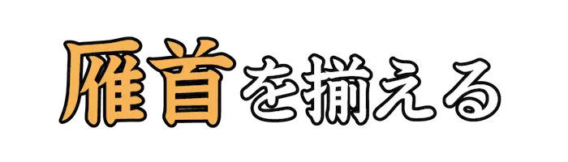 |
がんくび | 人が一斉に集まることをからかった言い方。 |
| Lv04_Ca013_0003 | かん | 気に入らずに、腹立たしく思う。『<癪|しゃく>に障る』とも。 | |
| Lv04_Ca013_0004 | 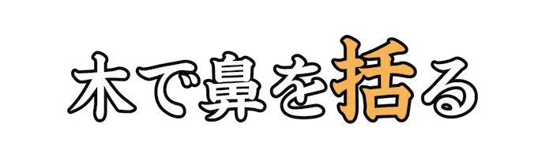 |
くく | 無愛想にふるまったり、冷やかにあしらう。『括る』は『こくる』の誤用とされる。 |
| Lv04_Ca013_0005 | きゅうへい | 昔の風習や習慣にこだわるあまり、考え方が<頑固|がんこ>であるさま。 | |
| Lv04_Ca013_0006 | きょうざ | 楽しい気分や関心が薄れること。 | |
| Lv04_Ca013_0007 | くちごわうま | 激しく主張することを馬にたとえた語。また、自分の意見をなかなか曲げない人。 | |
| Lv04_Ca013_0008 | 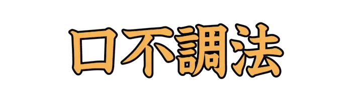 |
くちぶちょうほう | ものの言い方がうまくないこと。口下手。 |
| Lv04_Ca013_0009 | けいあんぐち | 双方に気に入られるように言葉を取り<繕|つくろ>って言うこと。また、信用の出来ない言葉。 | |
| Lv04_Ca013_0010 | 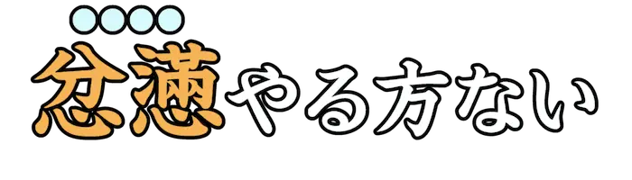 |
ふんまん | イライラして、どうしようもないさま。 |
| Lv04_Ca013_0011 | 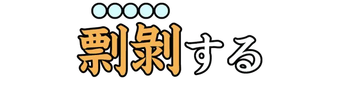 |
ひょうはく | 相手の欠点や不正を非難して、攻撃する。 |
| Lv04_Ca013_0012 | 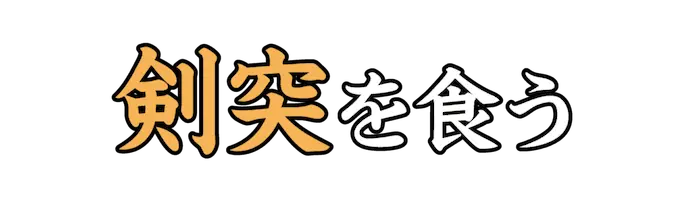 |
けんつく | 荒々しく言われたり、叱られる。また、角の立つ言葉で拒否される。 |
| Lv04_Ca013_0013 | 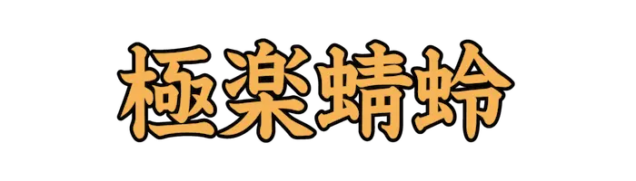 |
ごくらくとんぼ | 楽観的に考え、のんきに暮らす人をからかって言う語。 |
| Lv04_Ca013_0014 | 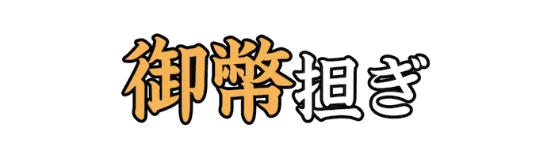 |
ごへい | 縁起、迷信などをいちいち気にかけること。また、そのような人。 |
| Lv04_Ca013_0015 | 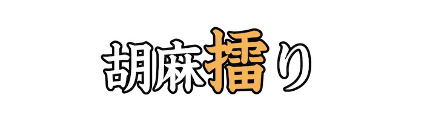 |
す | 他人に<媚|こ>びへつらって自分の利益をはかる。また、そのような人。 |
| Lv04_Ca013_0016 | しっぺ | ある仕打ちを受け、すぐに仕返しすること。 | |
| Lv04_Ca013_0017 | しゃく | 腹立たしくて、気分がむしゃくしゃする。 | |
| Lv04_Ca013_0018 | じゃけん | 相手の意思をくみ取ろうとせず、意地の悪いふるまいをすること。 | |
| Lv04_Ca013_0019 | 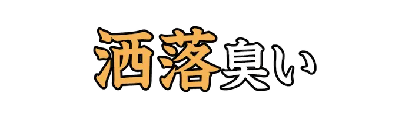 |
しゃら | しゃれた真似をして、小生意気であるさま。 |
| Lv04_Ca013_0020 | しょうが | 生姜が金を握る拳の形に似ることから[(諸説)]、金品にけちな人を指す隠語。 | |
| Lv04_Ca013_0021 | 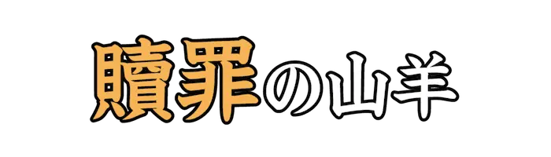 |
しょくざい | 不満や責任を転嫁されたときの対象のこと。『スケープゴート』とも。 |
| Lv04_Ca013_0022 | 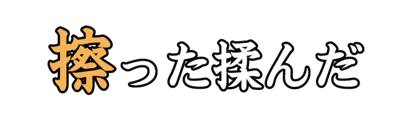 |
す | 意見が合わず、さんざんにもめること。 |
| Lv04_Ca013_0023 | 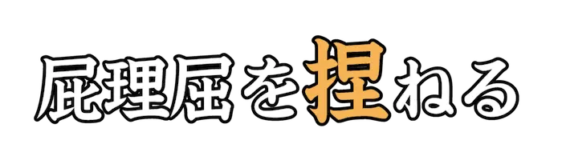 |
こ | 筋の通らないことを並べる。くだらない言い訳をあれこれと言う。 |
| Lv04_Ca013_0024 | 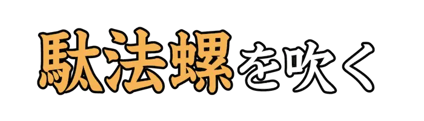 |
だぼら | でたらめで、くだらない大げさな話を言う。 |
| Lv04_Ca013_0025 | 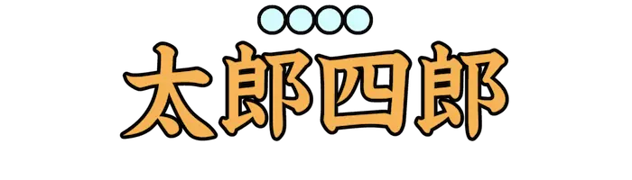 |
たろしろ | しろうとや、愚か者を指す隠語。 |
| Lv04_Ca013_0026 | 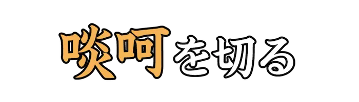 |
たんか | 威勢のいい言葉で、相手をまくし立てる。 |
| Lv04_Ca013_0027 | ちょうさいぼう | 人をあざけり、ばかにすること。また、ばかにされる人。 | |
| Lv04_Ca013_0028 | ちんぷんかん | 内容がまったく理解できず、さっぱりわけのわからないこと。『<珍紛漢紛|ちんぷんかんぷん>』とも。 | |
| Lv04_Ca013_0029 | 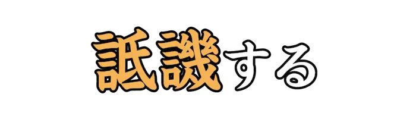 |
ていき | 悪口をいう。けなす。 |
| Lv04_Ca013_0030 | どうあく | 乱暴で荒っぽいこと。凶悪なこと。 | |
| Lv04_Ca013_0031 | 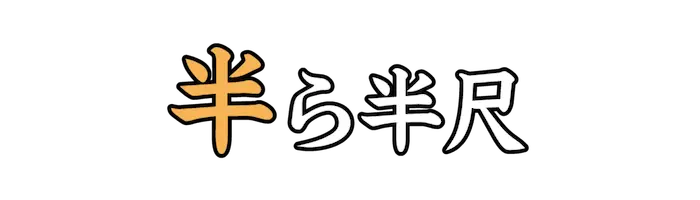 |
なか | 物事を中途半端にすること。また、いい加減であること。 |
| Lv04_Ca013_0032 | なまびょうほう | 十分に身についていない、未熟な知識や学問のこと。 | |
| Lv04_Ca013_0033 | なぶ | 立場の弱い者を、面白がって苦しめたり、もてあそんだりすること。 | |
| Lv04_Ca013_0034 | なめ | 相手を軽んじて見下す。『嘗める』とも。 | |
| Lv04_Ca013_0035 | にんぴにん | 人道に反することをする人。人でなし。 | |
| Lv04_Ca013_0036 | 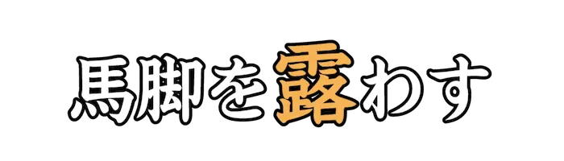 |
あら | 包み隠していた悪事が発覚するたとえ。 |
| Lv04_Ca013_0037 | 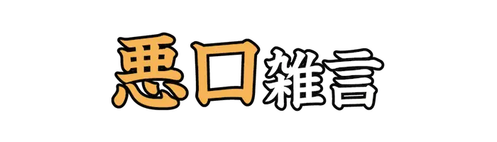 |
あっこう | あれこれと悪口を言ってののしること。 |
| Lv04_Ca013_0038 | 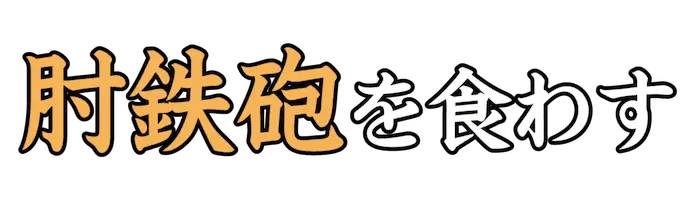 |
ひじでっぽう | 相手の申し出などを、強く拒絶する。 |
| Lv04_Ca013_0039 | 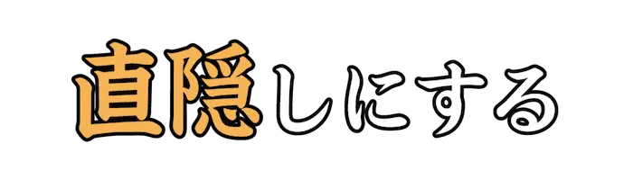 |
ひたかく | ひたすら悟られないよう隠し続ける。 |
| Lv04_Ca013_0040 | ひょうろくだま | 間の抜けた人や、愚か者のたとえ。 | |
| Lv04_Ca013_0041 | 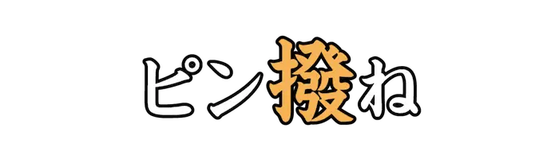 |
は | 間に入って不当に高い手数料を取る行為。また、それを行なう人。 |
| Lv04_Ca013_0042 | ふらち | 道理にそむいていて、不届きなこと。 | |
| Lv04_Ca013_0043 | 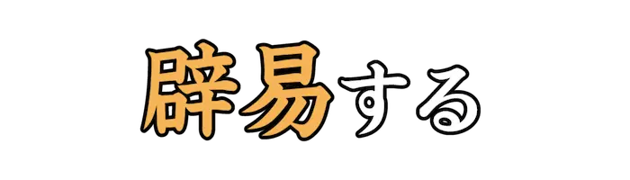 |
へきえき | 嫌気がさして、うんざりすること。 |
| Lv04_Ca013_0044 | 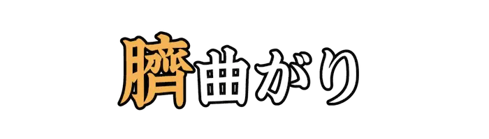 |
へそ | 性格がひねくれていて、素直でないこと。 |
| Lv04_Ca013_0045 | 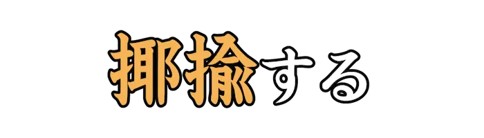 |
やゆ | からかったり、ばかにして笑う。また、皮肉を言ってもてあそぶ。 |
| Lv04_Ca013_0046 | 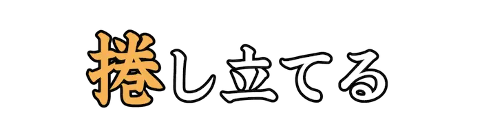 |
まく | 立て続けに、はげしく言い立てる。 |
| Lv04_Ca013_0047 | 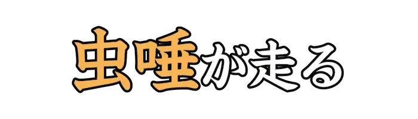 |
むしず | 胸がむかむかするほど不快である。 |
| Lv04_Ca013_0048 | やかま | うるさくて耳障りである。騒がしい。 | |
| Lv04_Ca013_0049 | 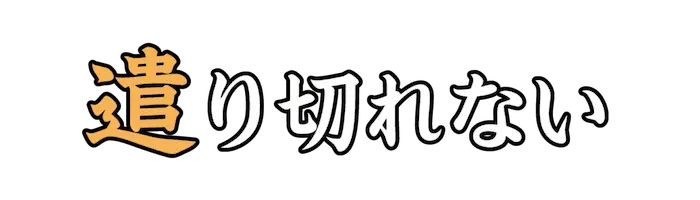 |
や | 仕打ちなどに対して、がまんできない。耐えられない。 |
| Lv04_Ca013_0050 | 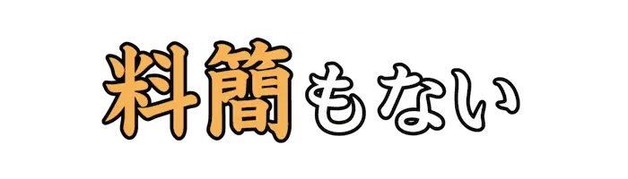 |
りょうけん | 手の下しようがなく、どうしようもない。聞き分けがない。 |
| Lv04_Ca013_0051 | 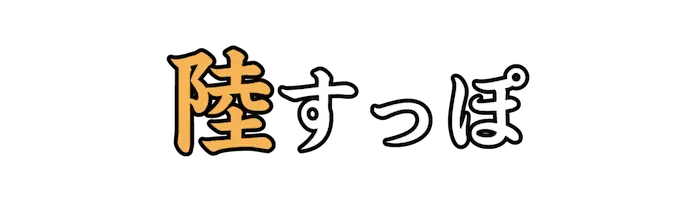 |
ろく | 物事が十分にできていないさま。『陸すっぽ返事もしない』などと用いる。 |
| Lv04_Ca013_0052 | わがまま | 他人を気にせず、自分勝手にふるまうこと。 | |
| Lv04_Ca013_0053 | おうわく | 道義に反することをして、人を惑わすこと。 | |
| Lv04_Ca013_0054 | わるず | 世間とずれて、ずるがしこくなること。 | |
| Lv04_Ca013_0055 | 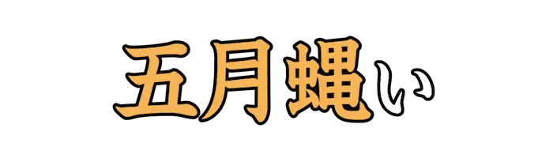 |
うるさ | 物音が大きくて騒がしい。やかましい。 |
| Lv04_Ca013_0056 | すげ | 他人に対する恩情が感じられない。『<素気|そっけ>ない』とも。 | |
| Lv04_Ca013_0057 | ごうさら | 前世で犯した罪の報いとして、この世で恥をさらすこと。 | |
| Lv04_Ca013_0058 | こわっぱ | 子どもをからかって言う語。 | |
| Lv04_Ca013_0059 | 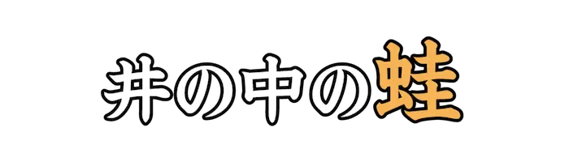 |
かわず | 自身の狭い価値観に囚われ、多様な視点が見えないたとえ。『大海を知らず』と続く。 |
| Lv04_Ca013_0060 | こまたすく | 他人の隙に乗じて、自身の利益をはかる人。 | |
| Lv04_Ca013_0061 | 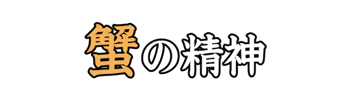 |
かに | 誰かが際立って抜きんでることを恐れて、引き留めるような精神を指すたとえ。 |
| Lv04_Ca013_0062 | 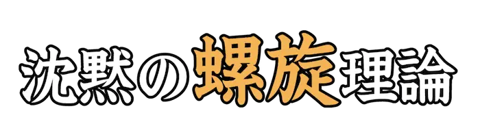 |
らせん | 少数派が同調圧力によって沈黙してしまうといったことを説いた理論。 |
| Lv04_Ca013_0063 | 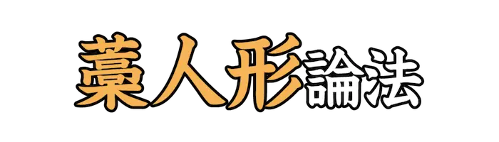 |
わらにんぎょう | 相手の主張を曲解して、すり替えた先の論点に対し反論して否定する論法。 |
| Lv04_Ca013_0064 | 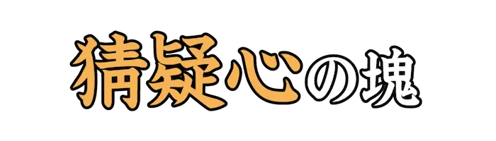 |
さいぎしん | 何に対しても疑り深く考えてしまい、素直に受け取れない性質や人のたとえ。 |
| Lv04_Ca013_0065 | 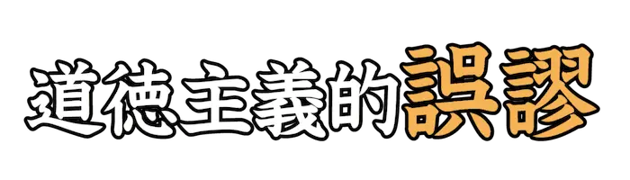 |
ごびゅう | 『～であるべきだから、～である』と、自身の道徳的価値観から事実を否定する誤り。 |